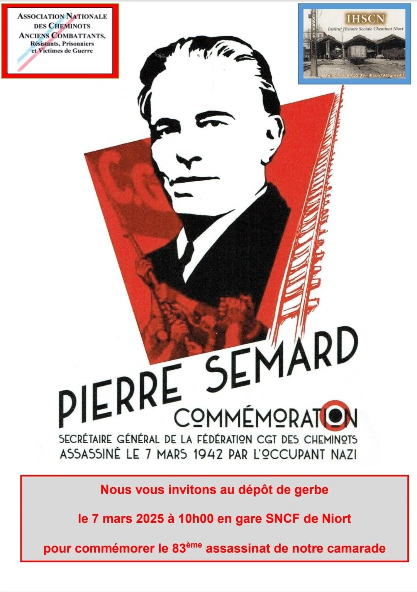

Annonce archivée
À Niort, un dépôt de gerbe en mémoire de Pierre Semard
Date indiquée par Facebook · 7 mars 2025
Repères éditoriaux
L’affiche invitait à un dépôt de gerbe en gare de Niort le 7 mars 2025 à 10 h. Les associations cheminotes y rappellent que Pierre Semard, secrétaire général de la fédération CGT des cheminots, a été assassiné par l’occupant nazi le 7 mars 1942.

Sources
Archive rouge · document diffusé sur Facebook · AR-0002-FB-01176
À lire aussi · L'élan de la Libération de Paris · Le lien d’origine